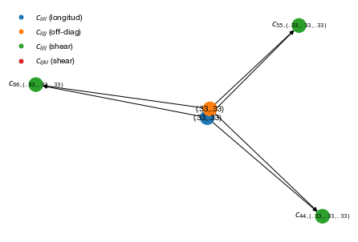
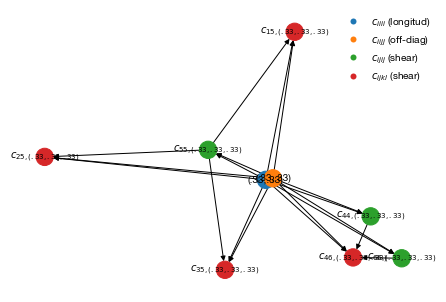

Resolving the ordering and dependencies between shear elastic modulus
[1]:
import cij.core.calculator
calculator = cij.core.calculator.Calculator("_attachments/plotting/config.yml")
/Users/chazeon/Documents/Projects/qha-cij-2/cij/core/phonon_contribution/nonshear.py:119: RuntimeWarning: divide by zero encountered in true_divide
return h_div_k * (self.freq_array[nax,:,:,:] / self.t_array[:,nax,nax,nax])
/Users/chazeon/Documents/Projects/qha-cij-2/cij/core/phonon_contribution/nonshear.py:119: RuntimeWarning: invalid value encountered in true_divide
return h_div_k * (self.freq_array[nax,:,:,:] / self.t_array[:,nax,nax,nax])
/Users/chazeon/Documents/Projects/qha-cij-2/cij/core/phonon_contribution/nonshear.py:141: RuntimeWarning: overflow encountered in exp
return self.Q ** 2 * numpy.exp(self.Q) / (numpy.exp(self.Q) - 1) ** 2
/Users/chazeon/Documents/Projects/qha-cij-2/cij/core/phonon_contribution/nonshear.py:141: RuntimeWarning: overflow encountered in square
return self.Q ** 2 * numpy.exp(self.Q) / (numpy.exp(self.Q) - 1) ** 2
/Users/chazeon/Documents/Projects/qha-cij-2/cij/core/phonon_contribution/nonshear.py:141: RuntimeWarning: invalid value encountered in true_divide
return self.Q ** 2 * numpy.exp(self.Q) / (numpy.exp(self.Q) - 1) ** 2
/Users/chazeon/Documents/Projects/qha-cij-2/cij/core/phonon_contribution/nonshear.py:130: RuntimeWarning: overflow encountered in exp
return self.Q / (numpy.exp(self.Q) - 1)
/Users/chazeon/Documents/Projects/qha-cij-2/cij/core/phonon_contribution/nonshear.py:130: RuntimeWarning: invalid value encountered in true_divide
return self.Q / (numpy.exp(self.Q) - 1)
03 -> []
03 -> [11(1111), 12(1122), 12(1122), 22(2222)]
04 -> dict_keys([])
04 -> dict_keys([11(1111), 12(1122), 22(2222)])
03 -> []
03 -> [11(1111), 12(1122), 12(1122), 22(2222)]
04 -> dict_keys([])
04 -> dict_keys([11(1111), 12(1122), 22(2222)])
03 -> []
03 -> [11(1111), 12(1122), 12(1122), 22(2222)]
04 -> dict_keys([])
04 -> dict_keys([11(1111), 12(1122), 22(2222)])
[2]:
%matplotlib inline
from matplotlib import pyplot as plt
from cij.plot.tasks import plot_tasklist_dependencies, plot_phonon_contribution_dependencies, make_legend
[3]:
plt.figure()
plot_phonon_contribution_dependencies(calculator)
make_legend()
plt.show()

For a more complicated example, see the following example with monoclinic system
[9]:
from cij.util import c_
from cij.core.tasks import PhononContributionTaskList
from cij.plot.tasks import plot_tasklist_dependencies
task_list = PhononContributionTaskList(calculator)
task_list.resolve(
(1/3, 1/3, 1/3),
[
c_(11), c_(22), c_(33),
c_(44), c_(55), c_(66),
c_(12), c_(23), c_(13),
c_(15), c_(25), c_(35),
c_(46),
]
)
[10]:
from cij.plot.tasks import plot_tasklist_dependencies, make_legend
plt.figure()
plot_tasklist_dependencies(task_list)
make_legend()
plt.show()
